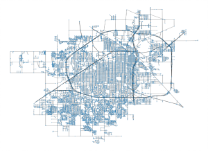

My Portfolio
{kind=link}
Five years of Phase Space Dynamics of the S&P 500
Inhomogeneous density of states in a discrete model of Standard & Poor's 500 phase space leads to inequitable predictability of market events. Most frequent events might be efficiently predicted in the long run as expected from Mean Reversion Theory. Stocks have different mobility in phase space. Highly mobile stocks are associated with less unsystematic risk. Less mobile stocks might be cast into disfavor almost indevinitely. Relations between information components in Standard & Poor's 500 phase space resemble of those in unfair coin tossing.More details

More details
{kind=link}
Multi-scale Analysis of urban spatial structures
We proposed feasible statistical algorithms for the automated
assessment of isolation and integration of urban locations and neighborhoods by
using maps acquired from the OpenStreeMap service, a collaborative project to
create a free editable map of the world. Map data in the project is collected from
scratch by volunteers performing systematic ground surveys using tools such as a
handheld GPS unit, a notebook, digital camera, or a voice recorder. More details
{kind=link}
Extreme events and Emergency Scales
An event is extreme if its magnitude exceeds the thresh-
old. A choice of a threshold is subject to uncertainty caused by a
method, the size of available data, a hypothesis on statistics, etc.
We assess the degree of uncertainty by the Shannon’s entropy cal-
culated on the probability that the threshold changes at any given
time. If the amount of data is not sufficient, an observer is in the
state of Lewis Carroll’s Red Queen who said “When you say hill,
I could show you hills, in comparison with which you’d call that
a valley”. More details